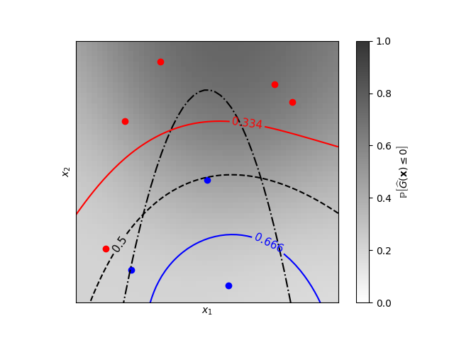

Note
Go to the end to download the full example code or to run this example in your browser via Binder
Iso-probability lines for Gaussian Processes classification (GPC)¶
A two-dimensional classification example showing iso-probability lines for the predicted probabilities.
Learned kernel: 0.0256**2 * DotProduct(sigma_0=5.72) ** 2
# Author: Vincent Dubourg <vincent.dubourg@gmail.com>
# Adapted to GaussianProcessClassifier:
# Jan Hendrik Metzen <jhm@informatik.uni-bremen.de>
# License: BSD 3 clause
import numpy as np
from matplotlib import cm
from matplotlib import pyplot as plt
from sklearn.gaussian_process import GaussianProcessClassifier
from sklearn.gaussian_process.kernels import ConstantKernel as C
from sklearn.gaussian_process.kernels import DotProduct
# A few constants
lim = 8
def g(x):
"""The function to predict (classification will then consist in predicting
whether g(x) <= 0 or not)"""
return 5.0 - x[:, 1] - 0.5 * x[:, 0] ** 2.0
# Design of experiments
X = np.array(
[
[-4.61611719, -6.00099547],
[4.10469096, 5.32782448],
[0.00000000, -0.50000000],
[-6.17289014, -4.6984743],
[1.3109306, -6.93271427],
[-5.03823144, 3.10584743],
[-2.87600388, 6.74310541],
[5.21301203, 4.26386883],
]
)
# Observations
y = np.array(g(X) > 0, dtype=int)
# Instantiate and fit Gaussian Process Model
kernel = C(0.1, (1e-5, np.inf)) * DotProduct(sigma_0=0.1) ** 2
gp = GaussianProcessClassifier(kernel=kernel)
gp.fit(X, y)
print("Learned kernel: %s " % gp.kernel_)
# Evaluate real function and the predicted probability
res = 50
x1, x2 = np.meshgrid(np.linspace(-lim, lim, res), np.linspace(-lim, lim, res))
xx = np.vstack([x1.reshape(x1.size), x2.reshape(x2.size)]).T
y_true = g(xx)
y_prob = gp.predict_proba(xx)[:, 1]
y_true = y_true.reshape((res, res))
y_prob = y_prob.reshape((res, res))
# Plot the probabilistic classification iso-values
fig = plt.figure(1)
ax = fig.gca()
ax.axes.set_aspect("equal")
plt.xticks([])
plt.yticks([])
ax.set_xticklabels([])
ax.set_yticklabels([])
plt.xlabel("$x_1$")
plt.ylabel("$x_2$")
cax = plt.imshow(y_prob, cmap=cm.gray_r, alpha=0.8, extent=(-lim, lim, -lim, lim))
norm = plt.matplotlib.colors.Normalize(vmin=0.0, vmax=0.9)
cb = plt.colorbar(cax, ticks=[0.0, 0.2, 0.4, 0.6, 0.8, 1.0], norm=norm)
cb.set_label(r"${\rm \mathbb{P}}\left[\widehat{G}(\mathbf{x}) \leq 0\right]$")
plt.clim(0, 1)
plt.plot(X[y <= 0, 0], X[y <= 0, 1], "r.", markersize=12)
plt.plot(X[y > 0, 0], X[y > 0, 1], "b.", markersize=12)
plt.contour(x1, x2, y_true, [0.0], colors="k", linestyles="dashdot")
cs = plt.contour(x1, x2, y_prob, [0.666], colors="b", linestyles="solid")
plt.clabel(cs, fontsize=11)
cs = plt.contour(x1, x2, y_prob, [0.5], colors="k", linestyles="dashed")
plt.clabel(cs, fontsize=11)
cs = plt.contour(x1, x2, y_prob, [0.334], colors="r", linestyles="solid")
plt.clabel(cs, fontsize=11)
plt.show()
Total running time of the script: (0 minutes 0.156 seconds)